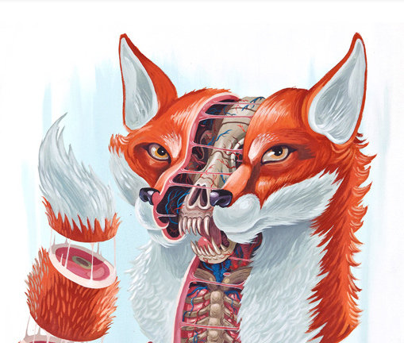

<html>
<meta charset="utf-8">

<head>
    <link href="https://fonts.googleapis.com/css?family=Lobster" rel="stylesheet">
    <link href="https://fonts.googleapis.com/css?family=Cinzel+Decorative" rel="stylesheet">
	<style>
	div {
		position:relative;
		border: thin solid lightGrey;
		width:720px;
		height:960px;
		display:inline-block;
		padding:30px;
		font-family: sans-serif;
		font-size:1rem;
		vertical-align:top;
		text-align:center;
		overflow:hidden;
	}
	img {
		position:absolute;
		top:0px;
		left:0px;
		width:100%;
        filter:grayscale(50%) contrast(120%) opacity(30%);
        -webkit-filter:grayscale(50%) contrast(120%) opacity(40%);
		opacity: 0.7;
        z-index:-1;
	}
	h2 {
		margin:0px;
	}
	h3 {
		font-size:0.9rem;
		margin:10px;
	}
	#michel {
		position: absolute;
		top:465px;
		left:150px;
		width:230px;
		z-index:3;
		opacity:1.0;
		filter:grayscale(50%) contrast(120%) opacity(80%);
		-webkit-filter:grayscale(50%) contrast(120%) opacity(60%);
	}
	#rto {
		position: absolute;
		top:450px;
		left:470px;
		width:200px;
		z-index:3;
		opacity:1.0;
		filter:grayscale(50%) contrast(120%) opacity(80%);
		-webkit-filter:grayscale(50%) contrast(120%) opacity(100%);
	}
	@page {
		size: 21cm 29.7cm;
		margin:0px; /* change the margins as you want them to be. */
	}
	.page {
    	page-break-after: always;
	}
	</style>
</head>

<body width="680px">
<script src="https://code.jquery.com/jquery-3.1.1.min.js"></script>
<script>

var p = [
"Svetlana Averina",
"Seyma Bayrak",
"Antoine Blanchard ",
"Leonardo Cerliani",
"Sharbatanu Chatterjee",
"Olivier Coubard ",
"Rosalia Dacosta-Aguayo ",
"Christine Delmaire",
"Stephanie Forkel",
"Chris Foulon",
"Charles Guttmann ",
"Katja Heuer",
"Morgan Hough",
"Stefano Ioannucci",
"Assia Jaillard",
"Lei Liew",
"Marine Lunven",
"Dan Lurie",
"Emmanuel Mandonnet",
"Daniel Margulies",
"Eric Moulton ",
"Parashkev Nachev",
"Anastasia Osoianu",
"Valentina Pacella",
"Charlotte Rosso",
"Michel Thiebaut de Schotten",
"Katarzyna Siuda-Krzywicka",
"Roberto Toro",
"Sébastien Tréguer",
"Emmanuelle Volle ",
"Demian Wassermann",
"Tom Zeffiro"
];

/*

 %\begin{minipage}[l]{1in}
 %  \sigskip \signature{}{Dr. Pierre Bellec \\ Organizer }
 % \end{minipage}
 %\hfill
 % \begin{minipage}[c]{2.8in}
 % \sigskip \signature{}{Dr. B. Nolan Nichols \\ Open Science SIG Secretary}
 %\end{minipage}
%\hfill
%\begin{minipage}[c]{9in}
%\sigskip 
%{\centering \includegraphics[width=.25\linewidth]{Signature.pdf}} \\
\signatured{R. Cameron Craddock, Ph.D. \\ Chair of Brainhack Global 2017}

{This is to certify that} {\bfseries{\dg. \MakeUppercase{\name}}}, { \dgn}
of {\sub}, {\inst}, \centering{participated in the \emph{\bfseries 2016 Organization of Human Brain Mapping Hackathon} organized by the \textbf{Organization of Human Brain Mapping Open Science Special Interest Group} in coordination with \textbf{brainhack.org}.}\\
}


"<br><br><br><br><br><br><br><br>",
		"<p>Michel Thiébaut de Schotten<span style='display:inline-block; width: 150px;'></span>Roberto Toro</p>",
		"<p>Institut du Cerveau et de la Moelle Épinière<span style='display:inline-block; width: 100px;'></span>Institut Pasteur</p>",
		"</div></td>"

*/


for(var i=0;i<p.length;i+=1) {
	var str;
	str=[
		"<div class='page'>",
		"",
		"<br>",
		"<b style='font-family:Lobster;font-size:1.6rem;float:right;margin:0px -15px'>Brainhack Lesions: Paris 2017</b>",
		"<br><br><br>",
		"<p style='font-family:Cinzel Decorative;font-size:1.3rem;horizontal-align:center'>Certificate of Collaboration</p>",
		"<br/>",
		"<p>MozillaLab Paris, France, Paris</p>",
		"<p>9&ndash;10 May 2017</p>",
		"<br/><br/></br/>",
		"<h2>",p[i],"</h2>",
		/*"<h3>2&ndash;4 Mars 2017</h3>",*/
		"<br><br><br><br><br><br><br><br><br><br><br>",
		
		"<table width='100%' style='text-align:center'><tr><td style='width:50%; margin:0px -15px'>",
		"",
		"<p>Michel Thiébaut de Schotten</p>",
		"<p>Institut du Cerveau et de la Moelle Épinière</p>",
		"</td>",
		"<td style='width:50%'>",
		"",
		"<p>Roberto Toro</p>",
		"<p>Institut Pasteur</p>",
		"</td></tr></table>",
		"</div></td>"
	].join(" ");
	/*
	str+=[
		"<td><div>",
		"",
		"<b style='font-family:Lobster;font-size:1.6rem;float:right;margin:-25px -15px'>Brainhack Global</b>",
		"<br/><br/></br/>",
		"<h2>",p[i+1],"</h2>",
		"<h3>2&ndash;4 Mars 2017</h3>",
		"</div></td></tr>"
	].join(" ");
	*/
	$("body").append(str);
}

</script>
</body>
</html>